贵是贵，但 Surface 二合一触屏还是太香了。
传统芯片性能改进
-
允许重复存取行缓冲区，而无需增加另外的行存取时间
- 如增加 快页模式 ，采用 EDRAM 等。如果下次访问的还是该行，则从一个小容量的 SRAM 中取出
-
增加时钟信号，使存储器和处理器 保持同步
- SDRAM，以时钟的上升沿传送数据
- 为了加速，在时钟的上升和下降沿都传输数据 DDR
同步DRAM（SRAM）& DDR
- 将与 CPU 异步工作模式改为同步工作模式，即拥有自己的行地址、列地址译码；
- 多存储体（Bank）配置；
- CPU发出 ACT命令 后，再发读或写命令进行访问；
- 编程模式寄存器，设置突发长度（1,2,4,8 等），即地址可以自增；
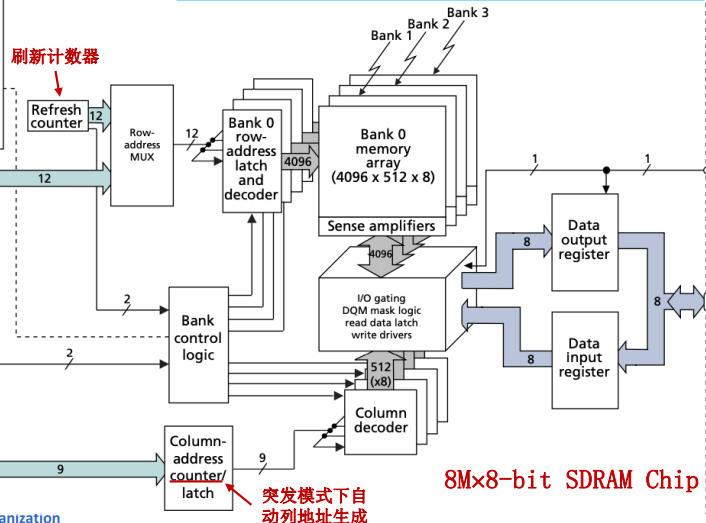
-
DIMM (Dual In-line Memory Module) 双边接触内存模块，可通过字扩展、位扩展的方式增加容量。
-
SDRAM 是通过两面接触槽、每一个芯片上包括若干并行工作的 BANK，而每个 BANK 有若干 PLATE.
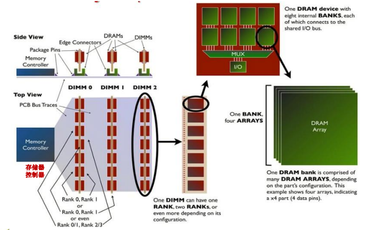
-
DDR 存储器的读取原理，核心思想是增加并行性：
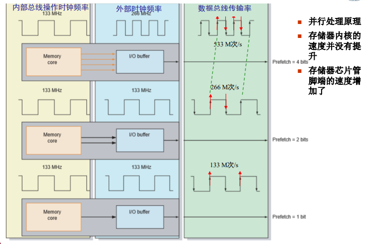
DRAM 读写的正确性校验
为提高 DRAM 存储器读写操作的正确性与可靠性（如航天、数据库）， 在写入 m 位数据的同时还需写入 k 位附加位，即写入经过纠错码（ECC）编码的数。
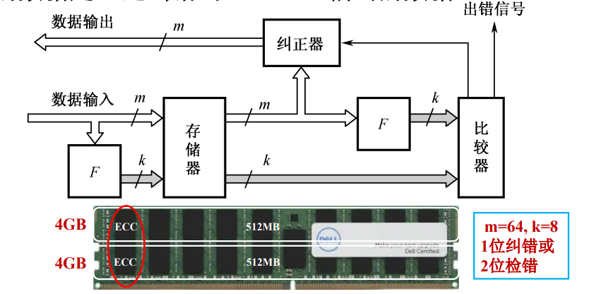
## 多模块存储器
由若干的模组所组成的主存是线性编址的，而地址的编排有两种模式：顺序与交叉（多通道）模式。
1. 顺序存储（回顾）
- 顺序存储就是地址在物理上是连续的，访问地址按顺序划分成若干模块；
- 特点是串行访问、各模块独立工作；增加模块可扩充存储器容量；
- 如下图，低 3 位选择字地址，高 2 位选择模块；
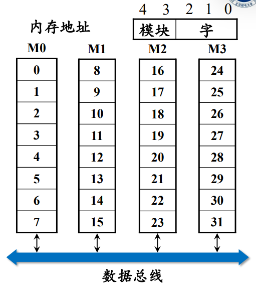
2. 交叉方式
- 地址码的低位字段选择不同的模块，而高位字段确定相应模块内的存储字；
- 连续地址分布在不同的模块中，同一模块的地址不连续；
- 对于连续字的传送可实现多模块的流水式并行存取，提高存储器带宽。
- 如下图，低2位选择模块，而高3位选择模块中的字；
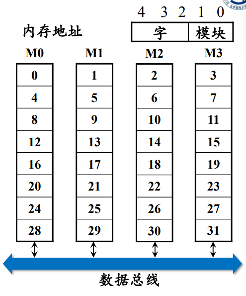
3. 多模块的基本结构
- 主存被分成若干独立的模块，而每个模块均有自己独立的读写控制电路、地址和数据寄存器， 与 CPU 传送信息；
- 与顺序存储不同，CPU 可以在一个存取周期内同时访问四个模块，存储器控制 分时使用 数据总线进行信息的传递；

4. 定量计算
假设模块字长等于数据总线宽度，且模块存取一个字的存储周期为 T，总线传送周期为 ，存储器的交叉模块数为 m，则有：
- 对于顺序存储，连续读取 m 个字需要：；
- 对于交叉存储，为了保证流水线正常工作，应满足 ；此时连续读取 m 个字所需时间：；
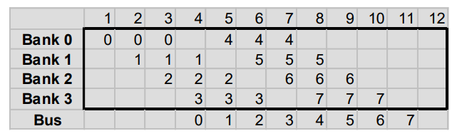
5. 交叉存储器
-
回顾：存储器进行一次读写操作所需的时间 称为存储器的访问时间（或读写时间）；而连续启动两次独立的“读”或“写”操作（如连续的两次“读”操作）所需的最短时间，称为存取周期；
中间可能要做刷新（重写）之类的操作，但是数据这时候已经取到了，我想立刻取下一个数据。所以引入交叉存储器并行读取其他模块的数据，从而增大带宽；
-
以二模块交叉存储器为例：
- 共有 8 个 2MB 存储体，地址高 3 位地址用于存储体选择(字扩展)；
- A20~A3 块内选择地址，依然采用分时复用的方式传输行地址与列地址；
- A2 模块选择，使得偶地址在模块0、奇地址在模块1；
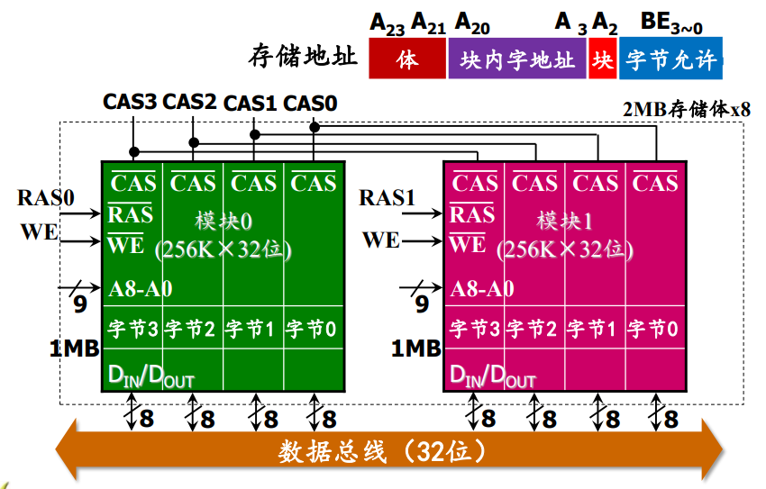
高速缓存（Cache）
-
背景：Cache 是一种高速缓冲存储器，是为了解决 CPU 速度太快而主存的速度太拉之间的矛盾而提出的技术；
-
Cache 一般由 SRAM 组成，大小为几百 KB，被嵌入到 CPU 中做指令与数据的缓存；
-
一般会区分为多档，如 L1 cache, L2 cache 等，形成金字塔结构；利用局部性原理，在Cache中完成大多数访问，从而缩短平均访问时间；
-
引入外存（如硬盘），我们解决了内存容量小的问题；引入 cache，我们解决了内存速度慢的问题，实现了对内存的抽象与统一；
-
Cache 全由硬件调度，对用户透明；
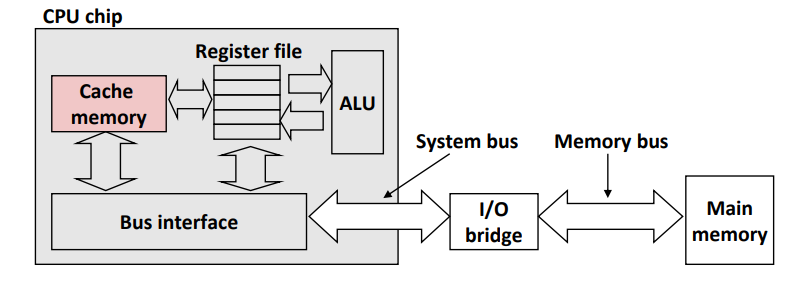
0. 局部性原理
一个编写良好的程序常常具有良好的局部性。它倾向于重复访问相同的数据项集合（时间局部性），或者倾向于访问邻近的数据项集合（空间局部性）。
例：C 语言数组按行优先方式存储在存储器中，因此左侧的代码更好的利用了局部性原理（但实际上编译器会做优化）；
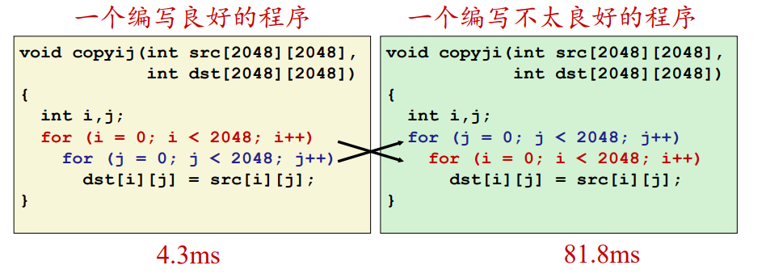
2. Cache 基本原理
- Cache 命中：可以在 Cache 中找到要访问地址的对应块儿；
- Cache缺失：该层的 Cache 找不到，必须去下一层找；

1. Cache 控制部件
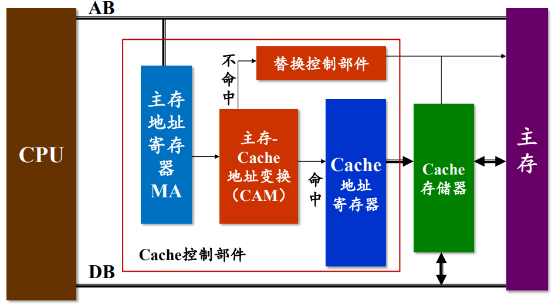
-
地址变换：如何将主存中的地址映射成 cache 中的地址
-
替换算法：在cache不命中时如何替换cache中的 内容
-
更新算法：如何保持主存与cache的一致性
1.1 内容可寻址储存器CAM
-
CAM 是一种内容寻址的存储器。将一个输入与存储的所有数据进行比较，若存在匹配，则输出该数据项对应的匹配信息。同时也能按地址进行读和写。
-
为了把主存块放到 Cache 中，必须应用某种方法把主存地址变换成 Cache 中的地址，称作地址映射。
对于每一个主存上的地址 ，将其表示为块大小（）以及块编号（）两部分；对于 cache，我们保持块大小不变，而块儿数（）远小于 。
-
地址映射方式
-
全相联映射（ Fully Associative Mapping）
-
直接映射（Direct Mapping）
-
V-way 组相联映射（Set Associative Mapping ）
-
1.1.1 全相连映射
- 主存的任意块儿可映射至 cache 的任意块儿；每次利用 CAM 查询即可；
- 优点：Cache的存储空间利用率高，命中率较高；
- 缺点：全连接所需要的 CAM 存储器线路复杂；
- 大致过程就是先把前 19 位的块儿选地址作为 tag 存储至 CAM，匹配的时候查询 CAM 中的所有标签，根据偏移量读出对应的字；
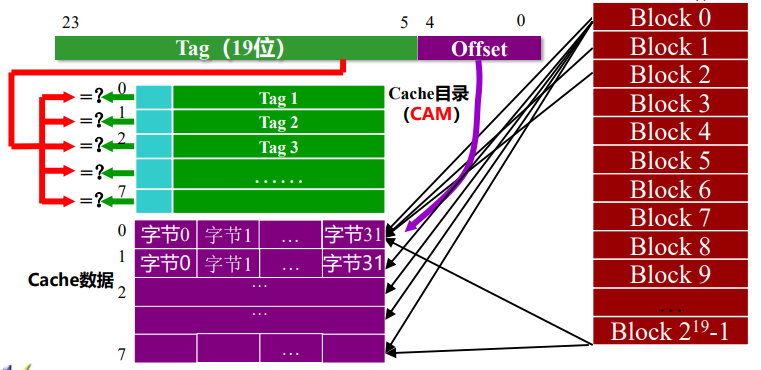
1.1.2 直接映射
- 根据主存块儿的最后若干位，唯一确定主存的特定行地址（类比取模哈希）；是多对一的映射关系；
- 特点：实现简单，易产生冲突缺失；
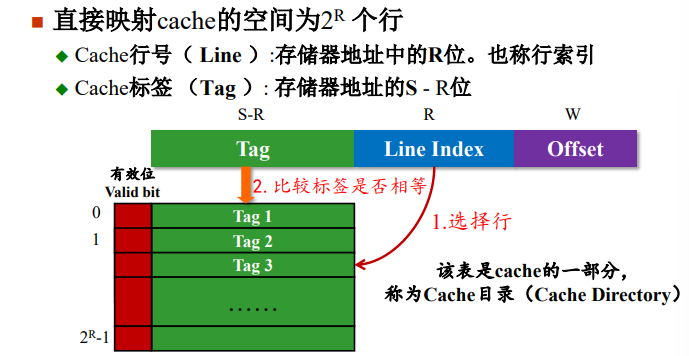
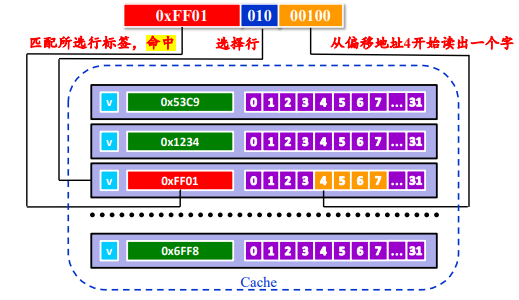
1.1.3 v-way 组相联映射
- 结合前两种方式：将 Cache 分成 u 组，每组 v 行，主存块存放到哪个组是固定的，查询组中全部映射直至命中or全部缺失；
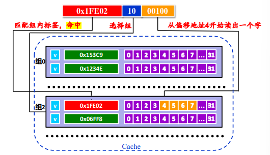
1.2 Cache冲突缺失和容量缺失
若发生冲突，则需要用新的数据块替换旧的 cache 块儿；
可采取以下策略：
- 随机替换法（RAND）：硬件随机选择一个 Cache 数据块替换出去；
- 先进先出（FIFO）：把最久远的调入 cache 的数据块作为被替换对象；
- 最少使用（LFU）：将最近被访问次数最少的数据块换出，需为每个 Cache 行设置访问计数器；
- 最久未使用（LRU）：将近期内最长时间未被访问过的数据块换出。需要为每个Cache行设置计时器；
1.3 Cache 写操作处理
-
数据在存储层次中存在多份拷贝，如何保证数据写操作处理 cache 和存储器中一致性。
-
写命中（write hit）的情况下：
- 直写法（Write Through）：立即将 w 的 cache 块儿写回低一层中，虽然简单 但会占用总线流量；
- 写回法（Write Back）：只写入 Cache，只有替换算法要驱逐当前块儿时，才将其写回低一层中；虽然能减少流量 但需要额外增加修改位（即懒标记）；
-
写不命中（write miss）的情况下：
- 非写分配（non-write-allocate）：直接写在低一层中，不会更新 cache，搭配直写法；
- 写分配（write-allocate）：先把新的的数据写入 cache，搭配写回法更新低一层的块儿。
-
一般来说，在 cache 之间速度快，采用直写法；而 cache 与主存之间较慢，采用写回法。
1.4 Cache 的性能指标
-
命中率（Hit Rate）：
在一个程序执行期间，设 表示在 Cache 中完成存取的总次数， 表示在主存中完成存取的总次数，则命中率 h 为：
若 表示命中时 Cache 访问时间， 表示未命中时的主存访问时间，则 Cache/主存系统 的平均访问时间 为: ；
设 ，则 访问效率e 有：
-
命中时间（Hit Time）：从 cache 传送一个字到 CPU 所需的时间，通常包括 “存储访问时间+确定命中/失效的时间”。
-
缺失率（Miss Rate） = 1 - 命中率